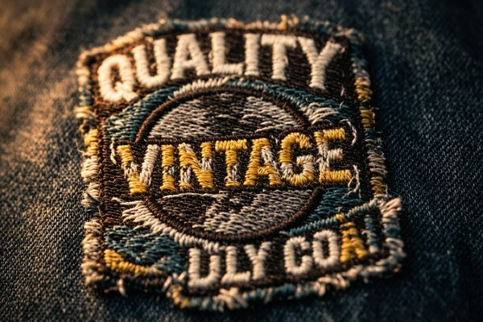

Vintage & Retro Patch Styles: Nostalgic Appeal
There's a reason a faded patch on a thrifted jacket feels more alive than a brand-new one. Vintage and retro patch styles borrow decades of visual history — and with the right colors, typography, and finish, a patch made yesterday can carry that same weight. This guide breaks down the look, era by era.

Some designs get "old" the way milk goes bad. Others get old the way leather does — better with every mile. Vintage and retro patches belong firmly in the second camp. What started as a practical way to patch a hole or mark a uniform became a visual language, and decades later, brands, bands, and makers are still mining that language for the authenticity a polished logo can't buy.
If you've been thinking about a retro patch for your own brand or collection, this is the map: the eras and styles worth borrowing, the colors and type that do the heavy lifting, and the tricks for getting a convincingly aged look on a patch that's actually brand new.
1. Why Retro Patches Never Really Went Away
The appeal isn't nostalgia for its own sake — it's texture. A vintage patch carries evidence of a life: the slightly uneven stitching, the thread that's faded a shade, the border that's softened at the edges. Against the flat, high-gloss finish of so much modern branding, that imperfection reads as real.
Three things keep retro patch styles in constant demand:
- They signal belonging. The patch's golden age was built on clubs, crews, and teams. A retro patch taps straight into that "one of us" energy.
- They look earned. Distressed thread and muted color suggest a story, whether or not there's actually one behind it.
- They're endlessly versatile. The same faded, old-school patch reads equally well on a denim jacket, a work cap, a tote, or a tour tee.
The Key Distinction
"Vintage" means the patch looks aged — faded, worn, softened. "Retro" means it references an older era's style but can be crisp and fresh. Most people use the words interchangeably, but knowing the difference helps you brief a factory precisely: aged versus period-correct are two different briefs.
2. The Visual Language of Vintage Patches
Strip away the era labels and a few elements do almost all the work. Get these right and the patch feels old before it's even stitched.
Color that's been lived in
Vintage patches rarely shout. They lean on muted, sun-faded tones — mustard, rust, olive, cream, denim blue, brick red — instead of saturated primaries. A thread that's one or two shades duller than "correct" instantly reads as age. Our color guide covers how to pick thread tones that look authentically worn rather than simply dark.
Type that belongs to a decade
Typography is the fastest era signal there is. A heavy slab-serif screams 1970s rock. A flowing script says 1950s Americana. Blocky, condensed letters feel 1980s sport. Match the lettering to the era you're referencing and the rest of the design falls into line.
Motifs with history
Certain images carry instant nostalgia — eagles and anchors, wings and banners, compasses, route signs, lightning bolts, and that ever-present rising sun. Borrow the iconography and the brain fills in the backstory.
Layout and borders that feel old
Vintage patches rarely sit as a bare logo on empty space. They lean on classic structures: a curved text banner arcing over the top, a ribbon underneath, a ring border or a notched shield holding everything together. Even the border does storytelling — a soft merrowed edge with slight irregularity reads as decades old, where a crisp laser-cut edge reads as brand new. Choose the frame as carefully as what goes inside it, because the shape around the design is often what triggers the nostalgia first.

3. Retro Styles Worth Borrowing, Era by Era
You don't need to be a historian to get the look right. Here are the four periods that show up most in custom patch orders, with what to lift from each.
- 1950s Americana: Script lettering, classic car and route-sign motifs, cheerful two-color schemes. Think diner signs and road-trip souvenirs — warm, optimistic, clean.
- 1960s–70s rock and moto: Psychedelic curves, bold slab type, winged skulls, flames, and stars. The single most borrowed era for band merch and motorcycle-club styling.
- 1970s–80s sport and varsity: Chenille letters, mascots, and bold team crests. This is where chenille patches earn their place — the fuzzy texture is half the nostalgia.
- Military and expedition: Subdued olive and khaki, regimented layouts, unit crests, and morale patches. The muted palette and structured shapes translate beautifully to everyday gear.
The trick is not to copy wholesale but to reference — take the palette from one era and the typography from another, and you get something that feels familiar without being a knockoff.
4. How to Get the Aged Look on a Brand-New Patch
Here's the part most people don't know: you can buy a patch that's never been worn and have it look like it's traveled for years. A few production choices do the aging for you.
- Pick pre-faded thread tones. Ask for colors one shade duller than the "true" version. This is the simplest, most reliable aging trick.
- Choose a vintage-style border. A soft merrowed edge reads older than a crisp laser-cut border. Slight border irregularity actually helps the look.
- Request a wash or stone-finish. Many factories offer a garment-wash treatment that softens the whole patch and dulls the thread naturally.
- Specify a matte, not glossy, backing. Shine is a dead giveaway of newness. A matte twill or canvas backing keeps things grounded.
- Go with woven for fine detail. Woven patches capture thin, distressed lines and small text more faithfully than embroidery, which suits intricate retro artwork.
One note of caution: "aged" and "sloppy" are different things. A good vintage patch still has clean, even embroidery under the faded finish — it's the color and surface that look old, not the craftsmanship. If the stitching itself is messy or the lettering is uneven, it reads as a quality problem rather than character. Always start with a well-made patch and age the surface, never the structure.
None of these cost extra in any meaningful way — they're just the difference between a well-aimed brief and a generic one. Tell your supplier you want it to look "vintage, not just dark," and the samples will land much closer.
5. Pairing Retro Patches with Modern Pieces
Half the fun of a retro patch is where you put it. The best styling usually involves contrast — an old-looking patch on a crisp, modern piece, or a full cluster of them on a single well-worn jacket.
- Denim jackets and trucker hats: The default. One large back patch plus a few small ones on the chest reads instantly classic.
- Canvas totes and work aprons: A single faded patch on a plain canvas bag turns a cheap giveaway into a keeper.
- Modern streetwear: A crisp retro patch on a minimalist hoodie or cap is exactly the contrast that makes both pieces interesting.
- Branded merch lines: For fashion labels, a small vintage crest on a hang tag, sleeve, or collar adds heritage cues without a full rebrand.
A final styling note: let the patch carry the nostalgia and keep everything around it simple. A faded patch on a plain field — solid denim, unbleached canvas, a single-color cap — always lands harder than a busy print fighting it for attention. When the palette is quiet, the patch's own history gets room to speak.
If the patch is going to be sewn on rather than ironed, sew-on backing is the traditional choice — and, fittingly, the stitching itself becomes part of the vintage texture.
Frequently Asked Questions (FAQ)
Q1: What's the difference between vintage and retro patches?
Vintage describes a look — faded, worn, softened by time. Retro references a past era's style but can be clean and crisp. A patch can be retro without being vintage, and most "vintage" patches people order are actually brand-new patches made to look aged.
Q2: Can you make a new patch look authentically old?
Yes. Pre-faded thread tones, matte backing, a soft merrowed border, and an optional garment-wash finish all age a patch convincingly. The key is specifying the look clearly — "vintage, not just dark" tells the factory exactly what you're after.
Q3: What colors read as vintage?
Muted, sun-faded tones work best: mustard, rust, olive, cream, denim blue, and brick red. Colors one or two shades duller than the "true" version instantly signal age, while saturated primaries read as modern.
Q4: Which patch type is best for retro designs?
It depends on the detail. Embroidered patches suit bold, classic retro shapes; woven patches capture fine distressed lines and small text; chenille nails the varsity-era look. Many vintage collections mix all three.
Q5: Are retro patches only for denim and clothing?
Not at all. They work beautifully on bags, hats, notebooks, and even product packaging. The same faded aesthetic that reads as heritage on a jacket adds warmth to almost any branded item.
Want a Vintage Patch With Real Staying Power?
Tell us the era you're channeling and we'll match the colors, type, and finish to nail it. Free digital proof in 12 hours, no minimum order.
Get Free Quote